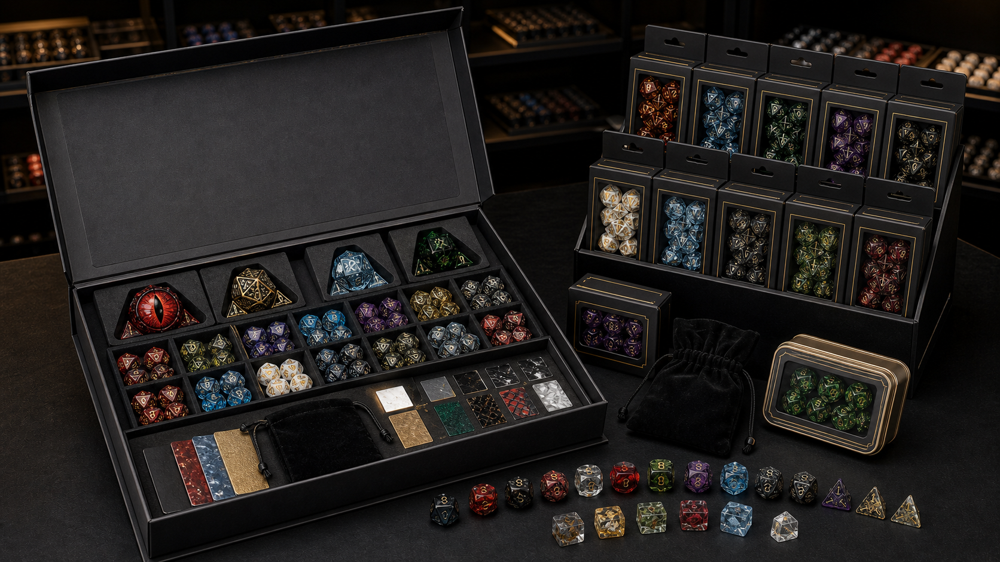
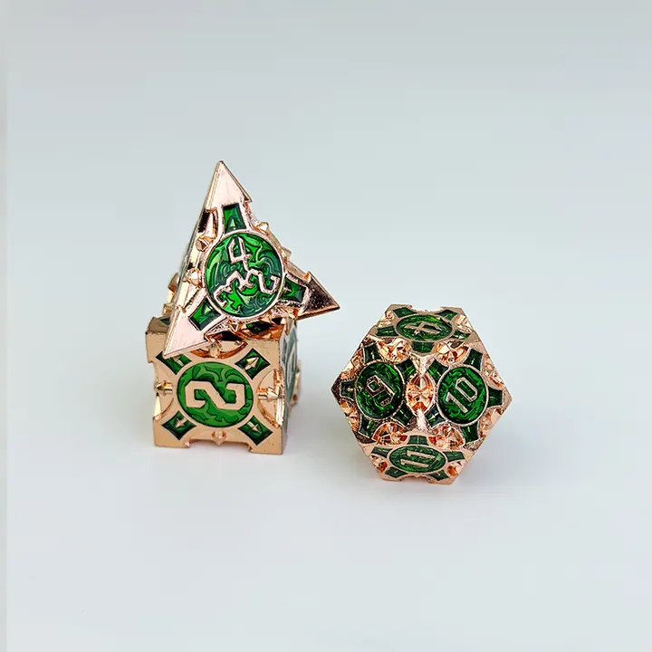
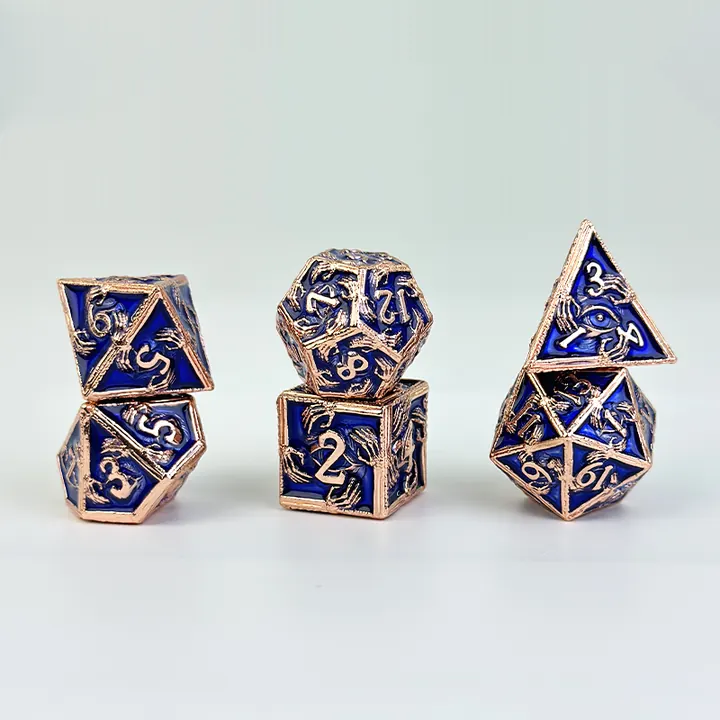
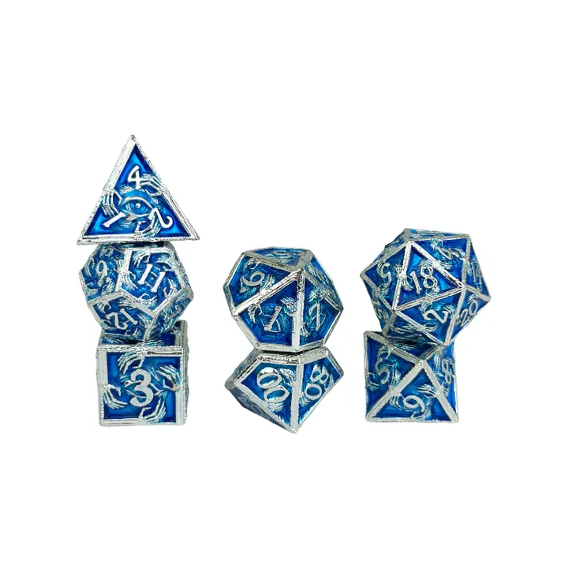
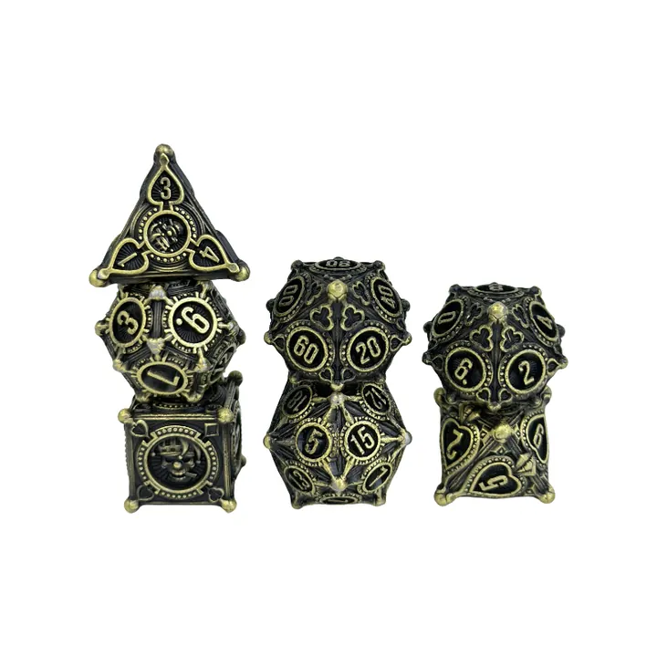
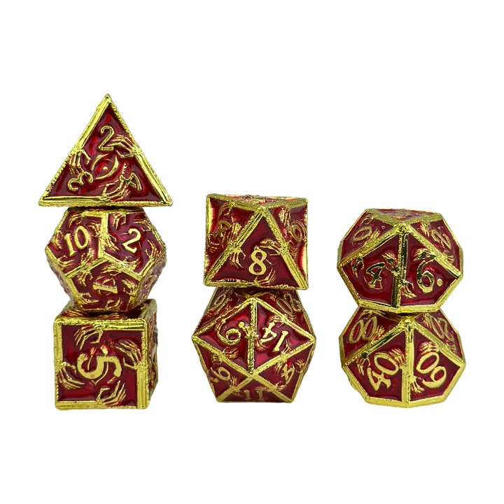
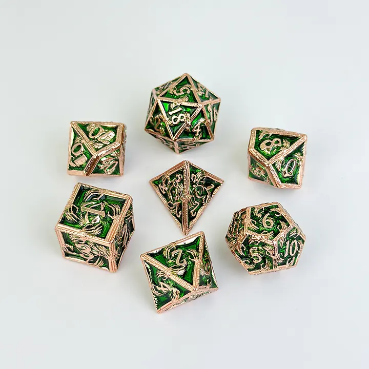
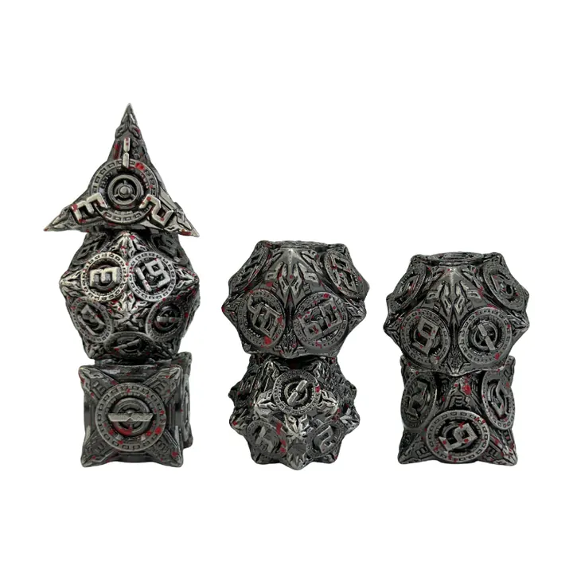
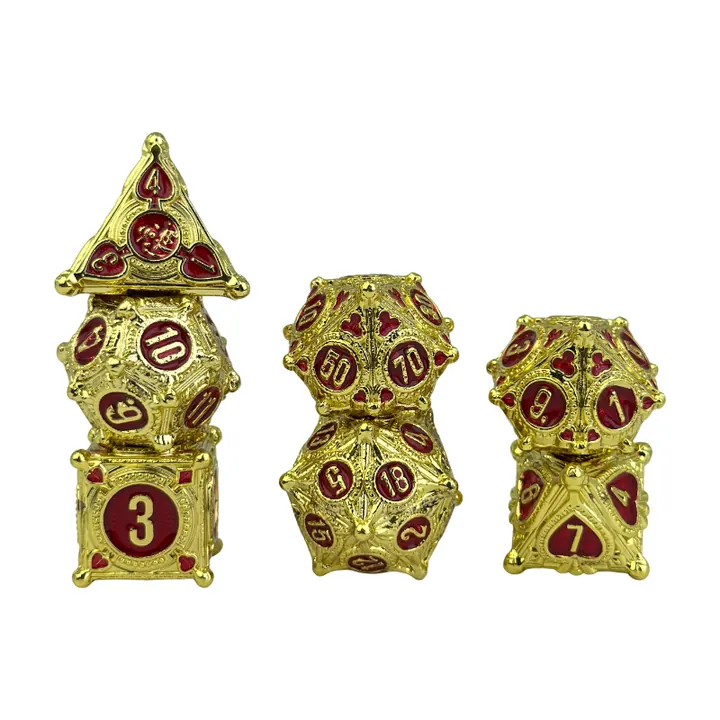

Bulk polyhedral dice sets for retailers, events, and tabletop brands.
Source 7-piece RPG dice sets, d20 assortments, theme mixes, sample kits, and retail-ready packaging for repeat wholesale programs.


Mixed sculpted dice samples for bulk assortment planning.
A good bulk order should include multiple visual families. These real samples show how buyers can mix dragon, class, elemental, and relic products across price tiers.








Build a bulk dice assortment around buyer behavior.
Bulk polyhedral dice work best when the assortment is not random. Game stores, event vendors, and distributors need a clear mix of entry price points, premium sets, giftable packaging, and fantasy themes that players can understand quickly.
- Standard 7-piece polyhedral sets for new players, classes, and campaign add-ons.
- D20-focused assortments for impulse purchases, events, rewards, and display bowls.
- Theme mixes such as dragon, wizard, rogue, paladin, elemental, treasure, and rune dice.
- Packaging by velvet bag, paper box, tin, magnetic gift box, blister card, or counter display.
Recommended bulk polyhedral dice programs.
| Program | Best for | Typical mix | B2B value |
|---|---|---|---|
| Starter bulk sets | Game stores, school clubs, event vendors | Standard 7-piece sets in multiple colors | Low barrier entry and easy replenishment. |
| Theme bulk sets | Retail shelves and campaign shopping | Dragon, class, elemental, dungeon relic themes | Better merchandising by player identity and campaign mood. |
| Premium bulk sets | Gift shops, collectors, seasonal drops | Sharp edge resin, liquid core, oversized d20, boxed sets | Higher perceived value and stronger shelf presentation. |
| Private label bulk | Dice brands and distributors | Custom packaging, SKU labels, inserts, display cartons | Repeatable branded line with better reorder control. |
What we can prepare for a bulk dice inquiry.
Assortment planning
Define the ratio of standard, themed, premium, and giftable dice in one order.
Mixed packing
Pack by SKU, theme, display box, buyer PO, event kit, or distributor carton mark.
Packaging tiers
Choose simple bags, retail boxes, tins, magnetic boxes, or counter display formats.
Reorder support
Keep theme families and SKU names organized for future replenishment orders.
Bulk polyhedral dice questions.
What should I include in a first bulk dice order?
Start with a mix of standard 7-piece sets, a few visually strong fantasy themes, and one premium tier such as sharp edge resin or liquid core dice.
Can bulk dice include custom packaging?
Yes. Bulk orders can use bags, boxes, tins, inserts, SKU labels, counter displays, or private label packaging depending on budget and retail channel.
Is this page different from wholesale dice?
Yes. This page focuses on bulk assortment structure and packing logic, while the wholesale dice page covers the broader B2B program.
Plan a bulk polyhedral dice order.
Send your buyer type, target quantity, preferred dice materials, packaging format, and delivery country.